TVV RESEARCH SLATE — October 29, 2026 — 12 desks
1. Major Geopolitical Conflict Developments
- ★ Israel count at about 92%: Netanyahu's bloc holds 53 seats, Gadi Eisenkot's bloc 48 and the Arab parties a record 19, so neither side reaches the 61 needed for a majority. Likud has 26 seats. With 91% counted, Mansour Abbas' United Arab List rose to 8 seats and the Joint List fell to 11. Absentee "double envelope" ballots are now being counted. Haaretz live · Guardian live · The Hindu
- ★ Israel fraud claims rejected: a senior police official told Haaretz there is no evidence of election fraud and called claims that Arab voters "stole" the election "spin"; the acting head of the Central Elections Committee also said the claims have no basis. Netanyahu was accused of an "ugly delegitimisation campaign" over his remarks about the Arab parties, and both he and Eisenkot claim a mandate. Haaretz live · Guardian live · Gulf News
- ★ Ukraine, Oct 29: a Russian jet-powered drone hit a platform at Dnipro's main railway station where a commuter and a passenger train stood, killing 13 people; six are in critical condition. Strikes on Chernihiv (two 15-year-old girls killed) and Kremenchuk (two killed) brought the day's toll to at least 17. Overnight Russia launched 112 drones, 40 of them jet-powered; 97 were downed or jammed. Zelensky linked the strikes to the easing of sanctions on some Russian oligarchs and the energy sector. Ukrainska Pravda · UNN · Ukrainska Pravda overnight · Hromadske
- ★ Moscow targeted: Russia says Ukraine sent 613 drones toward Moscow overnight while the city hosted more than 22 African leaders at a summit; 231 were destroyed near the city, and Russia claimed 1,214 Ukrainian drones downed across its regions overnight. The Kremlin condemned the attacks during the summit, TASS reports. Al Jazeera · Devdiscourse/TASS
- ★ Hormuz mine claims (conflicting): Iran's IRGC says three "violating" tankers exploded and caught fire after hitting mines on the "unauthorized southern route" in the past 24 hours, with radar and navigation switched off; flags and timing were not given. CENTCOM calls Iran's mine-strike reports FALSE and says the internationally recognized transit lanes were cleared and remain clear. UKMTO separately logged a vessel on fire 9 nm north of Khasab, Oman, from a third-party master's report; crew status unknown, and it is not clear whether it is one of the three. Al Arabiya · DW · Middle East Eye (CENTCOM) · Gulf News
- Iran's terms: army spokesman Mohammad Akraminia said Hormuz "will never be reopened until the Islamic Republic's conditions are fully met". The IRGC also claims it captured a US MQM-170 drone in the western strait (not independently verified). Iran International · Al Arabiya
- ★ US-Iran diplomacy: Qatar-led mediators, backed by Pakistan, Saudi Arabia, Egypt and Turkey, have given Iran a draft with a seven-day confidence-building timeline; a Tehran official called the ideas unacceptable. Trump confirmed Vice President Vance's outreach to Tehran but denied it was a peace initiative, as Washington weighs strikes after the midterms. Iran International · Anadolu · Reuters via Investing.com · Geo TV
- ★ North Korea fired about 10 short-range ballistic missiles from Wonsan toward the East Sea, flying about 250 km, after a South Korean dialogue offer. Seoul is coordinating with Washington and Tokyo, and China said it hopes "relevant parties" will work for peace. AP · Korea Times
- Sudan: the army intensified drone and air strikes on RSF positions in El Fasher and Kordofan on Oct 28, saying it is preparing ground operations; witnesses reported damage to civilian property, including the Sultan Ali Dinar Mosque. Human Rights Watch marked one year since the fall of El Fasher. Sudan Tribune · HRW
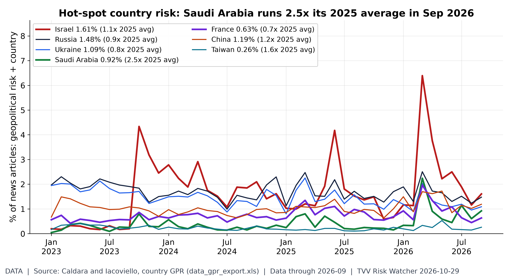
Hot-spot country GPR trends. Caldara-Iacoviello country GPR, September 2026 (share of articles): Saudi Arabia 0.92% (2.5x its 2025 average); Taiwan 0.26% (1.6x its 2025 average); China 1.19% (1.2x its 2025 average); Israel 1.61% (1.1x its 2025 average); Russia 1.48% (0.9x its 2025 average); Ukraine 1.09% (0.8x its 2025 average); France 0.63% (0.7x its 2025 average). Iran has no country series in this dataset. Monthly; next update early Nov. [Data; data as of 2026-09 (monthly; held: next update early Nov)] Source: matteoiacoviello.com data page
2. Major Terror / Security Incidents
- ★ Germany: police arrested two Belarusian men suspected of planning paid sabotage attacks in southern Germany for Russia, Spiegel reports; the case is linked to an arson at Romania's CARFIL arms plant. Reuters via StreetInsider · Romania Times
- ★ Michigan: a Muskegon County man was charged with making a terrorism threat over an alleged mass-violence plot after suspected pipe bombs, Molotov cocktails, firearms and writings were found. Maryland Coordination and Analysis Center
- Syria: authorities say a French jihadist was killed in a shootout with government forces in Idlib; one civilian was wounded. The Hindu
- ★ Cyber, Israel: the SETTRA ransomware group has been identified behind the Oct 14 attack on Colmobil, Israel's largest car importer, a double-extortion attack that disrupted operations and led the Transport Ministry to block its access to the vehicle-registration system. Colmobil says it is back to full operation and no data was exposed; reports that it paid a ransom come from industry sources and are unconfirmed. Ctech · Ctech analysis
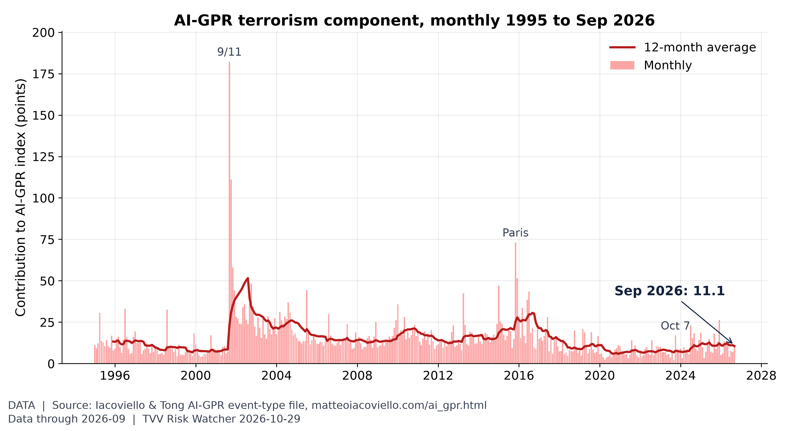
Terrorism share of geopolitical risk. The terrorism component of AI-GPR was 11.1 in September vs 7.0 in August; the 2026 monthly high is 13.3 (March) and the 12-month average is 10.5. [Data; data as of 2026-09 (held: monthly, next update early Nov)] Source: matteoiacoviello.com data page
3. Earthquakes and Eruptions
- ★ No qualifying earthquake. The largest event was an M6.4 southeast of Easter Island on Oct 29 (USGS green alert, remote ocean, no damage reported). The year's M6+ count is at 120 against a median of 119 (see graph). USGS event · USGS map
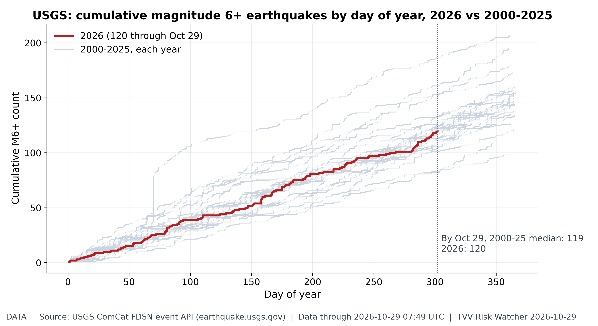
M6+ earthquake pace. 2026 has 120 M6+ quakes through Oct 29 vs a 2000-25 median of 119 by this date (range 82-187). Latest: M6.4 southeast of Easter Island (Oct 29, 07:49 UTC). 11 duplicate USGS solution(s) of the same event merged. [Data; data as of 2026-10-29 07:49 UTC (last M6+; USGS ComCat pulled ~7:10 AM ET Oct 29)] Source: earthquake.usgs.gov data page
4. Solar / Space Weather
- ★ Space weather: Kp peaked at 2 in the past 24 hours. SWPC's table shows Kp up to 5 (G1) early Oct 31 UT, although its written rationale says no G1 storm is expected. Solar radiation storm odds are 1% a day. NOAA SWPC 3-day forecast
- Magnetic pole drift (warning, measured data): NOAA/NCEI tracks the north magnetic pole's continuing drift toward Siberia in the World Magnetic Model. No one can predict the timing of a sudden geomagnetic shift. Michael's own view: 2035 at the earliest. NOAA NCEI wandering poles · World Magnetic Model
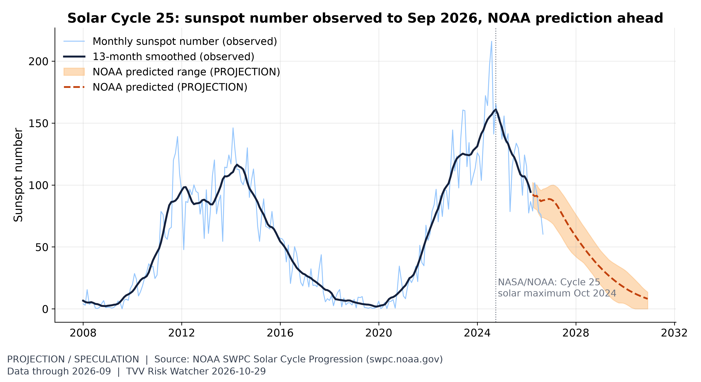
Solar Cycle 25 progression. The monthly sunspot number was 60 in September, past the Oct 2024 maximum; declining phases can still bring large flares and CME storms such as Oct 10's. [Projection/Speculation; data as of 2026-09 (observed); prediction to 2030] Source: swpc.noaa.gov data page
5. Critical Infrastructure / Transportation Disruptions
- ★ Puerto Rico load shedding: LUMA had 160,921 customers (about 11%) without power at 8 p.m. Oct 28 after failures at the San Juan and Aguirre plants plus problems at Palo Seco and Costa Sur left a roughly 311 MW deficit at the evening peak. Primera Hora · Sin Pelos en el Micrófono
- ★ US Virgin Islands: a WAPA failure blacked out St. Croix while rolling blackouts continue on St. Thomas and St. John. Virgin Islands Daily News
- Philippines: the Visayas grid was on red and yellow alerts again on Oct 28. Bangladesh had another grid fault that disrupted power in parts of Dhaka and Chattogram. ABS-CBN · Daily Star
- ★ Electricity costs: US electricity prices are up 43.4% since January 2020 against 29.8% for all consumer prices, and have outpaced headline inflation for 18 straight months (see graph). The Strategic Petroleum Reserve held 282.6 million barrels in the week to Oct 23, the lowest since 1982. FRED electricity CPI · EIA weekly petroleum
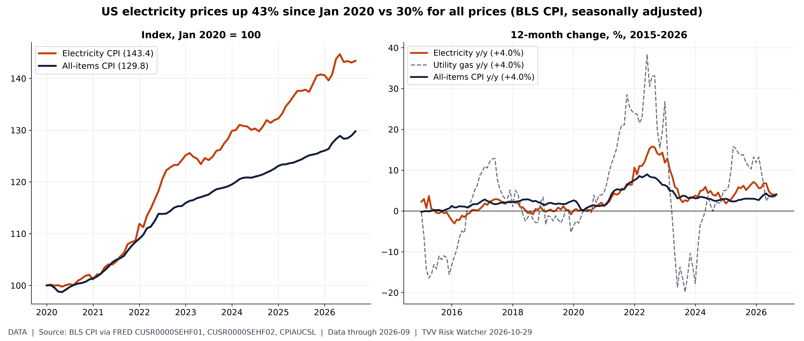
Electricity up 43% since 2020 vs 30% for all prices. BLS electricity CPI rose +4.0% y/y in September 2026 vs +4.0% for all items (gap +0.0 pp); electricity has outpaced headline inflation for 18 straight months, though the y/y gap has now nearly closed. Since Jan 2020 electricity is up 43.4% vs 29.8% overall. Data-center load is one of several drivers (fuel, grid capex, weather); BLS does not attribute causes. [Data; data as of 2026-09 (monthly CPI)] Source: fred.stlouisfed.org data page
6. Econo-Metrics
- ★ Fed hold, 10-2: the FOMC kept rates at 3.75-4.00%. Governor Lisa Cook and Cleveland Fed President Beth Hammack dissented for a 25 bp hike; Cook's dissent was not expected. The statement upgraded growth to "strong" and said "the accumulation of more information" will guide the next move. Chairman Warsh would not prejudge December, called the hike debate a "family fight", and said Q3 growth is likely running above 3%. From 2027 one of the eight meetings will focus only on strategy. Fed press conference transcript · CNBC · Fortune · Reuters via Investing.com
- ★ Warsh's jobs claim checked: he said four-week average jobless claims are "at the lowest level in generations". Relative to payrolls, the four-week average of 197,750 (week to Oct 17) is 0.124% of jobs, the lowest since records began in 1967 (see graph). Fed transcript · FRED IC4WSA
- ★ Bonds after the Fed: Wednesday's 10-year yield rose 5.2 bp to 5.044%, its biggest gain since Sept 28, while the 2-year slipped to 4.731%. Thursday morning the 10-year eased to about 4.99-5.00%, the 2-year to 4.683% and the 30-year to 5.329%. Gold futures fell 0.6% to $4,036 on Wednesday. MarketWatch · CNBC Treasuries
- ★ Today: the Q3 GDP advance estimate and September PCE inflation are due at 8:30 a.m. ET. The ECB decides today and the Bank of Japan tonight; both are expected to hold with a hawkish tone (Polymarket prices a hold at 99.95% for each). USD/JPY is near 158. BEA schedule · FXStreet · Polymarket ECB · Polymarket BoJ
- ★ Oil Thursday: Brent about $114.05-114.19 and WTI about $101.27-101.45, down roughly 1-1.5% as hopes for renewed US-Iran talks offset the Hormuz mine claims. Arab News/Reuters · Moneycontrol · CNBC oil
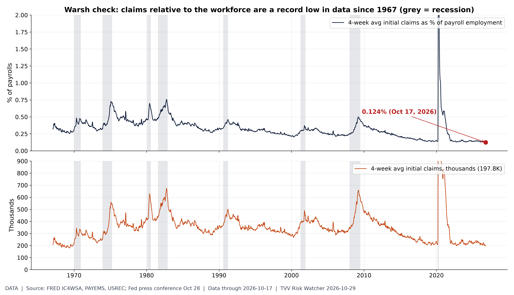
Warsh's 'lowest claims in generations' holds when scaled to the workforce. At the Oct 28 press conference Chair Warsh said the 4-week average of jobless claims runs at the lowest level in generations. FRED IC4WSA was 197.75K in the week to Oct 17; as a share of payrolls (159.0M, Sep) that is 0.124%, a record low in data since 1967; series low 0.124% (Oct 2026). In raw numbers claims were last this low in Oct 2022. The Fed held at 3.75-4.00% with two hike dissents (Cook, Hammack). [Data; data as of 2026-10-17 (weekly claims; payrolls 2026-09)] Source: fred.stlouisfed.org data page
7. Epidemic / Bio-Metrics
- ★ DRC Ebola (Bundibugyo) to Oct 28: 10,193 confirmed cases and 4,960 deaths (CFR 48.7%). The latest bulletin added 52 cases and 32 deaths; 936 people are in treatment centers, and transmission is active in 66 health zones in eight provinces. The US has issued a new travel rule. Ebola tracker letter · UN News · CIDRAP
- ★ Measles: the US count reached 4,461 cases through MMWR week 42, 2.2 times all of 2025 (see graph). CDC measles
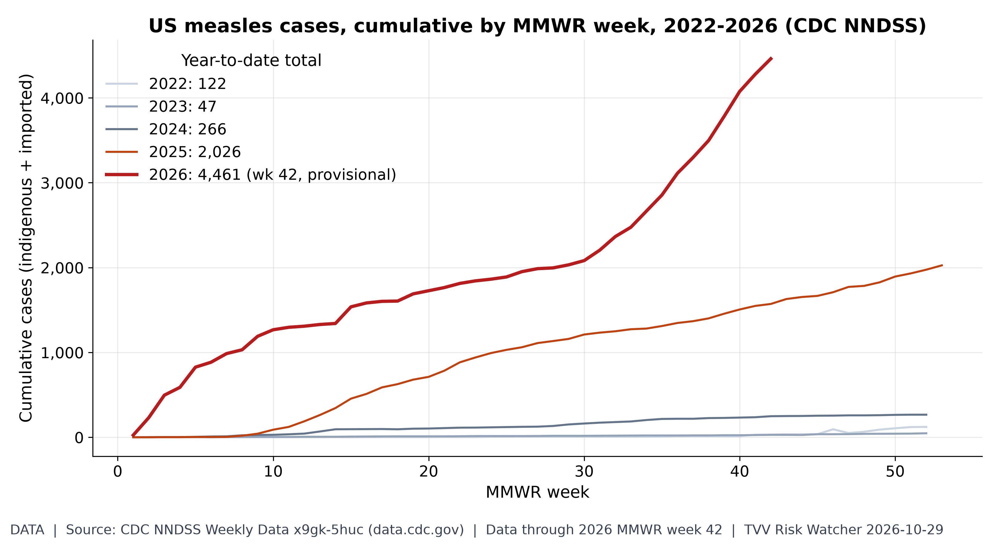
US measles resurgence. NNDSS shows 4,461 US measles cases through MMWR week 42 of 2026, 2.2x all of 2025 (2,026); latest provisional week posted as of ~7:10 AM ET Thu Oct 29. [Data; data as of 2026 MMWR week 42 (provisional; pulled Oct 29)] Source: data.cdc.gov data page
8. Gold and Silver and Commodities
- ★ Spot at 07:52 ET (gold-api.com): gold $4,028.60, silver $52.69 (ratio about 76.5), platinum $1,489 and copper $6.61/lb. Gold is down about $21 from yesterday's $4,049.80 quote after the hawkish Fed dissents. Platinum's monthly average peaked at $2,434 in January (see graph). gold-api XAU · gold-api XAG · gold-api XPT · gold-api copper
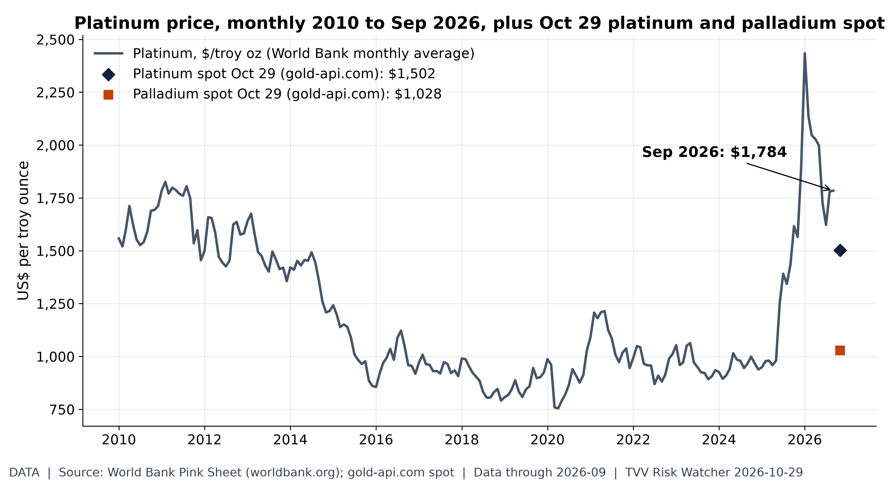
Platinum group metals. Platinum averaged $1,784/oz in September (2010-26 high $2,434, Jan 2026); Oct 29 spot quotes at 07:06 ET are platinum $1,502 and palladium $1,028. [Data; data as of 2026-09 (World Bank monthly, held); 2026-10-29 07:06 ET (gold-api.com spot)] Source: worldbank.org data page
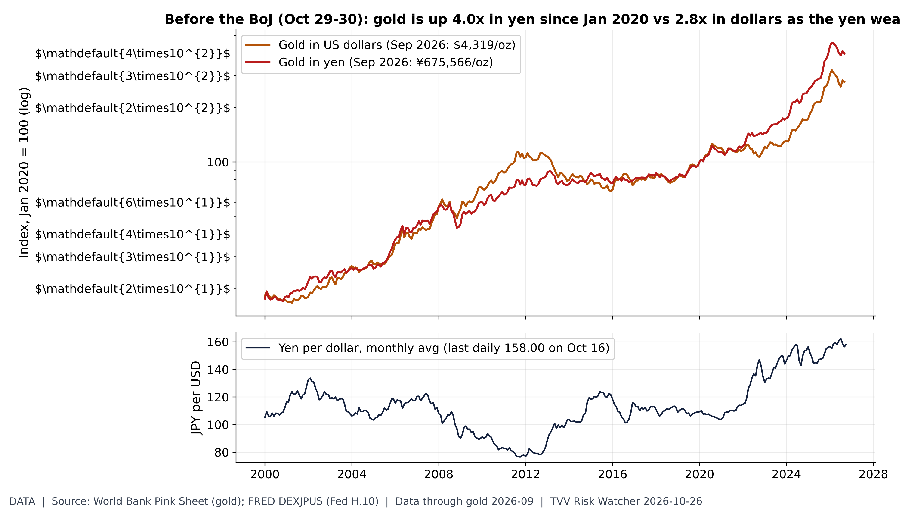
Gold in yen: the weak-currency hedge. World Bank monthly gold averaged $4,319/oz in September 2026, 2.8x Jan 2020; priced in yen (FRED monthly-average JPY) it was ¥675,566/oz, 4.0x, because the dollar bought 156.4 yen vs 109.3 in Jan 2020. Latest daily rate 158.00 (Oct 16). BoJ decides Oct 29-30. [Data; data as of gold 2026-09 (monthly, Pink Sheet); JPY 2026-10-16] Source: worldbank.org data page
9. Stock Averages and Nasdaq Major Movers
- ★ Wednesday Oct 28 close: the Dow rose 0.19% to 52,475.10, the S&P 500 0.28% to 7,743.98 and the Nasdaq 0.27% to 26,549.85 after the Fed hold. MarketWatch
- ★ Thursday premarket: Nasdaq-100 futures about -1%, S&P 500 futures -0.2%, Dow near flat. Alphabet is down about 10%; a close below -9.77% would be its worst post-earnings day since its 2004 IPO. Microsoft is up nearly 4% and ServiceNow fell about 15% after hours. Yahoo Finance live · CNBC · Reuters via Investing.com · CNBC after-hours
- Asia Thursday: Japan's Nikkei rose 1.10% to 64,659.47, its fourth straight gain; Korea's Kospi fell 1.24% to 5,937.66 as Samsung Electronics dropped 4.13%, while SK Hynix rose 2.22%. Yonhap · TradingKey
- Bitcoin: $80,151 on Coinbase spot at 07:52 ET, about $1,100 below yesterday's quote. Coinbase spot
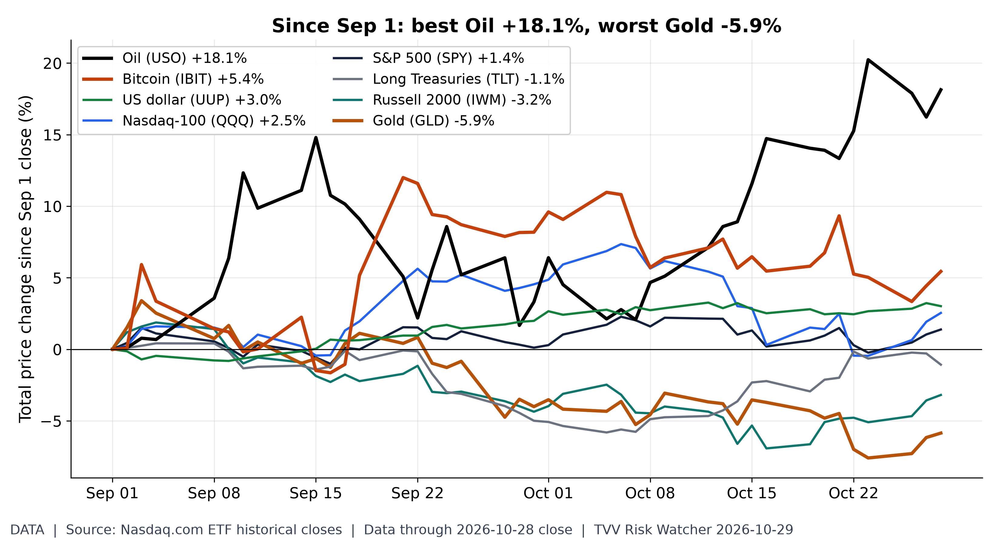
Cross-asset scoreboard since Sep 1. Price change from the Sep 1 close to Oct 28: Oil (USO) +18.1%; Bitcoin (IBIT) +5.4%; US dollar (UUP) +3.0%; Nasdaq-100 (QQQ) +2.5%; S&P 500 (SPY) +1.4%; Long Treasuries (TLT) -1.1%; Russell 2000 (IWM) -3.2%; Gold (GLD) -5.9%. ETF closes (Nasdaq.com), price only, no dividends. [Data; data as of 2026-10-28 close] Source: nasdaq.com data page
10. Polymarket and Kalshi Sentiment Highlights
- ★ December Fed (Polymarket): a 25 bp hike stays at 76.5% after the hold, with no change at 21.5% and any cut under 1% (see graph). Polymarket December Fed
- ★ Israel (Polymarket): next PM Netanyahu 44.5%, Eisenkot 23.75% (down from 34.6% yesterday) and Bennett 4.05%. Polymarket Israel PM
- ★ Iran markets (Polymarket): the US-Iran ceasefire lasting through the midterms is at 93.5% (90.5% yesterday) and through Oct 31 at 97.1%. Hormuz traffic back to normal is priced at 5.5% by Nov 30 and 11.5% by Dec 31. Polymarket ceasefire midterms · Polymarket ceasefire · Polymarket Hormuz Dec 31
- Recession odds: a US recession by the end of 2026 is at 5.5% on Polymarket. Polymarket US recession
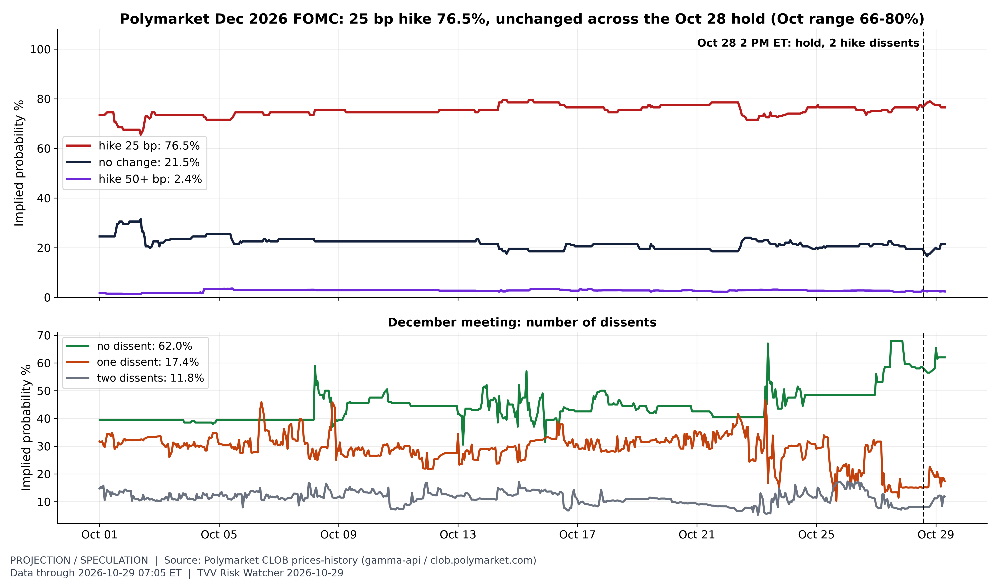
Bettors still price a December hike after the Fed held. The Fed held at 3.75-4.00% on Oct 28 (10-2; Cook and Hammack wanted a hike). Polymarket's December market priced a 25 bp hike at 76.5% just before the 2 PM ET statement and 76.5% at the Oct 29 07:05 ET print; no change 21.5%. October range of the hike odds: 65.5-79.5%. Odds of a December decision with no dissent: 62.0%. Prices are last trades, not a forecast. [Projection; data as of 2026-10-29 07:05 ET (hourly CLOB)] Source: polymarket.com data page
11. Tech-Metrics
- ★ Alphabet's cash burn: Q3 revenue rose 25% to $127.58 billion but missed ($128.22 billion expected), and adjusted EPS of $2.67 missed $3.02, its first top-and-bottom-line miss in nearly four years. Free cash flow was negative $9.07 billion against an expected -$2.70 billion. Capex was $51.36 billion; 2026 guidance stays $195-205 billion, and 2027 is expected to top $300 billion. CNBC · CNBC premarket · Investing.com
- ★ Microsoft's beat: fiscal Q1 revenue was $92.28 billion and adjusted EPS was $4.89. Azure revenue was $33.17 billion, up 48%. Capex including finance leases was $45.2 billion, below the $50.67 billion expected, and free cash flow fell 27% to $18.63 billion but stayed positive. Reuters framed the split as "cash is king" in the AI spending boom. CNBC · Invested Alpha · Reuters via Investing.com
- ★ Tonight: Amazon and Intel report after the close. Amazon is expected near $202 billion in revenue, with focus on AWS growth and a capex outlook of about $220 billion; Intel near $16.4-16.5 billion and 39-40 cents adjusted EPS,. Year to date Intel is up 158.9% and Amazon 10.3% (see graph). Moneycontrol · Yahoo Finance Intel
- Google launched Gemini 4 Carbon, a frontier model focused on cybersecurity, coding and long-running agent tasks, first only for selected cyber defenders in its Fairwind Program, at $2 per million input tokens and $10 per million output tokens. Google blog · The Verge
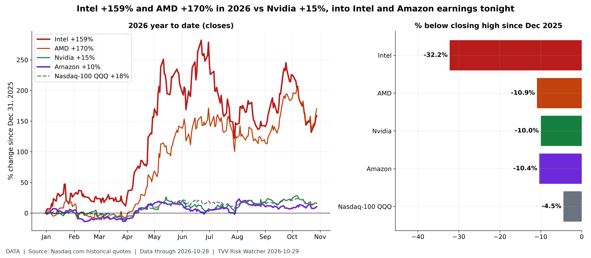
Intel and AMD have far outrun Nvidia in 2026. Through the Oct 28 close: Intel $95.53 (+158.9% YTD), AMD $578.44 (+170.1%), Nvidia $215.38 (+15.5%), Amazon $254.60 (+10.3%), vs QQQ +18.1%. Intel and Amazon report Q3 after today's close; verify times on the investor-relations pages. [Data; data as of 2026-10-28 (Nasdaq.com daily closes)] Source: nasdaq.com data page
12. AI Hypergrowth Risks
- ★ AI capex outrunning cash: in the latest quarter, Alphabet, Meta, Amazon and Oracle each spent more on capex than they generated in operating cash flow, per SEC filings; Microsoft is the exception (see graph). About 75% of Microsoft's capex now goes to short-lived assets such as chips. Microsoft's capex is $45.2 billion including finance leases but $39.4 billion in cash capex in its 10-Q. SEC EDGAR · Invested Alpha · Reuters via Investing.com
- ★ AI success claim, verification under way: OpenAI says its models found a Lean-verified proof refuting the Exponential Time Hypothesis, a 27-year-old pillar of complexity theory, with independent checking led by Russell Impagliazzo, Ramamohan Paturi and Ryan Williams. Science reports the claim is not yet confirmed by the wider community. OpenAI · Science
- ★ AI dependency outages, Oct 28: Cursor reported a multi-service degradation of Cloud Agents, Grok Bot, Origin, Automations and Bugbot from 21:15 to 23:13 UTC (about 2 hours, cause not stated). MUVO's daily AI incident log for the same day also lists elevated Claude Sonnet errors, a Claude Gmail connector recovery and a Google postmortem on a London incident. OutageDeck · MUVO daily AI incidents
- AI penetration: 24.6% of US employer businesses used AI in the two weeks to Oct 18, the highest since the Census question was revised in Nov 2025 (17.3% then), and 28.6% expect to within six months (second graph). Census BTOS
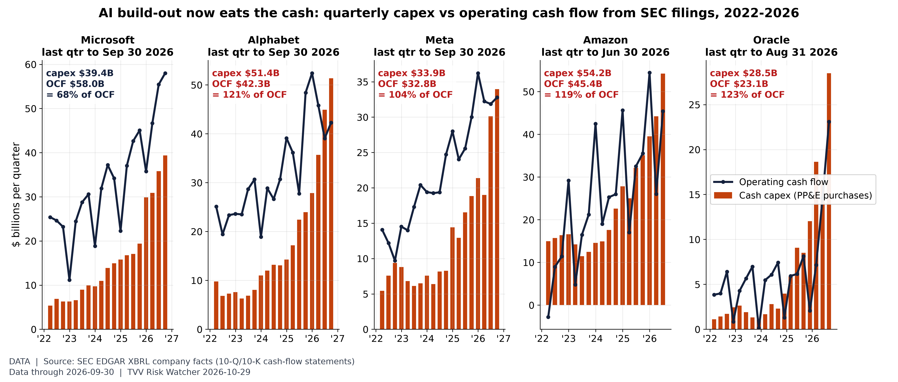
Capex exceeds operating cash flow at 4 of 5 AI spenders. From the 10-Q/10-K XBRL data: Alphabet's Q3 cash capex $51.4B exceeded operating cash flow $42.3B (10-Q filed Oct 29); Microsoft (Jul-Sep, 10-Q Oct 28) $39.4B vs $58.0B; Meta Q3 $33.9B vs $32.8B; Oracle (Jun-Aug) $28.5B vs $23.1B; Amazon (Apr-Jun; Q3 due tonight) $54.2B vs $45.4B. Capex above OCF in the latest quarter: Alphabet, Meta, Amazon, Oracle. Cash capex excludes finance leases (Microsoft's reported capex incl. finance leases is higher). Quarterly values for Q2-Q4 derived from year-to-date filings. [Data; data as of 2026-09-30 (latest 10-Q per company)] Source: data.sec.gov data page
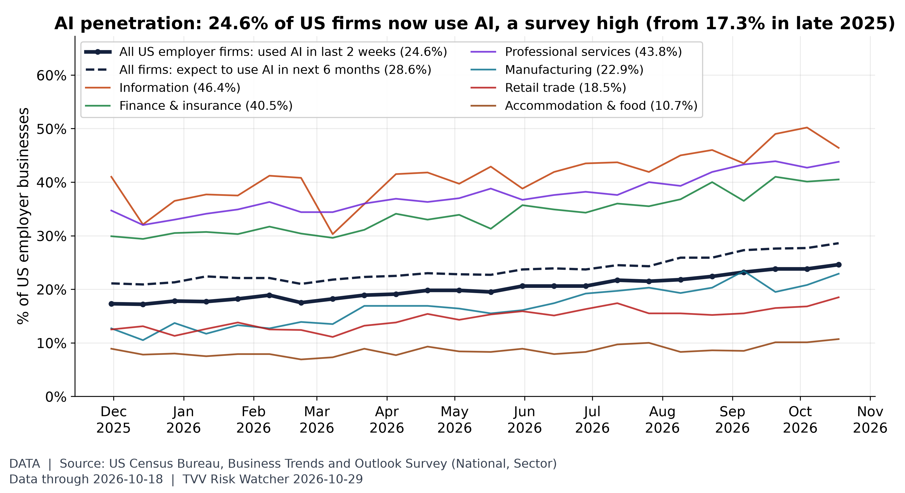
AI penetration: US firms using AI. Census BTOS: 24.6% of US employer businesses used AI (the survey now calls it "SI") in the two weeks to Oct 18, the highest since the question was revised in Nov 2025 (17.3% then); 28.6% expect to use it within six months. Highest sector shown: Information 46.4%. Wider adoption also means more firms exposed to AI outages and errors. Biweekly survey estimates with sampling error. [Data; data as of 2026-10-18 (BTOS collection ending; published Oct 22)] Source: census.gov data page
TECHVESTVENTURES ACTION-ALERT — October 29, 2026
EDITOR — Michael Hentschel
Most news events require or spawn no action or reaction, some (but not many) are or become warnings. We draw attention to substantial lifestyle risks and market risks in particular, some created by Mid-Term Vote anxieties, Middle East tensions, vast over-indebtedness globally, and other events we track. Longer term but capable of causing sudden power surges as serious as the Carrington Event. Climate instability occasioned by long-term cyclical solar electro-magnetic flares, is becoming much more prominent and even more likely. New AI predictive analytics and pattern seekers are pointed in some of these directions, and we monitor imminent likelihood. Some readers might hedge and others might see opportunity. The above is not investment advice.
Graph Sources
• Hot-spot country GPR trends (data): https://www.matteoiacoviello.com/gpr_files/data_gpr_export.xls
• Terrorism share of geopolitical risk: https://www.matteoiacoviello.com/ai_gpr.html
• Terrorism share of geopolitical risk (data): https://www.matteoiacoviello.com/ai_gpr_files/ai_gpr_eventtype_monthly.csv
• M6+ earthquake pace: https://earthquake.usgs.gov/fdsnws/event/1/
• M6+ earthquake pace (data): https://earthquake.usgs.gov/earthquakes/eventpage/us7000ttxz• Solar Cycle 25 progression: https://www.swpc.noaa.gov/products/solar-cycle-progression
https://services.swpc.noaa.gov/json/solar-cycle/predicted-solar-cycle.json
• Electricity up 43% since 2020 vs 30% for all prices: https://fred.stlouisfed.org/series/CUSR0000SEHF01
• Warsh's 'lowest claims in generations' holds when scaled to the workforce: https://fred.stlouisfed.org/series/IC4WSA